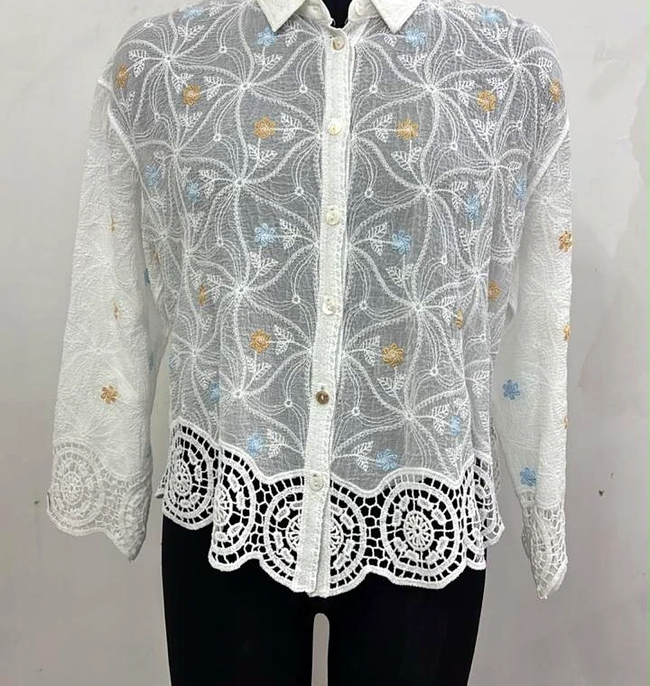
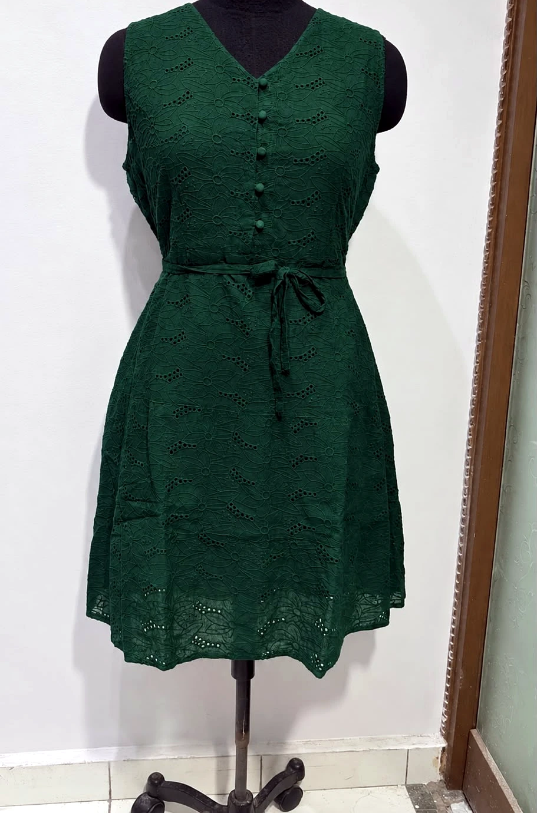

FABRIC & CRAFTSMANSHIP / 01
Schiffli.
Texture with intention.
Floral eyelet, openwork and embroidered surfaces bring dimension to cotton-led women's western wear. Final fabric, design and process are confirmed against each style brief.
 EMBROIDERED CUTWORK TOP / STYLE 3155
EMBROIDERED CUTWORK TOP / STYLE 3155SURFACE STUDIES
Patterns that
shape the story.
Explore visual directions for cotton eyelet and cutwork. These photographed garments show eyelet, embroidered and cutwork details. The fabric and technique are confirmed with each style brief.



PRODUCT APPLICATIONS
From fabric
to silhouette.
Schiffli and cutwork can be considered across selected garment categories when the fabric and design call for it.
DEVELOP A SCHIFFLI COLLECTION